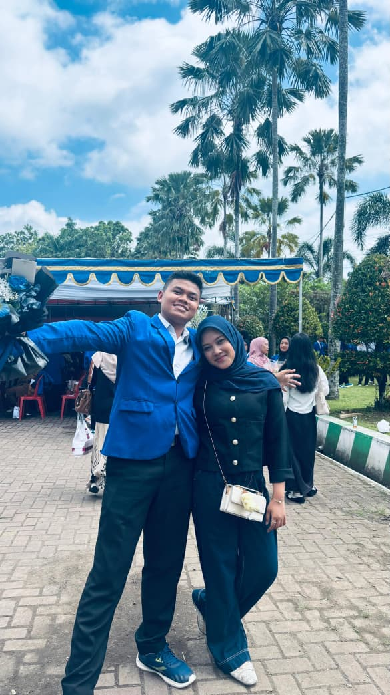
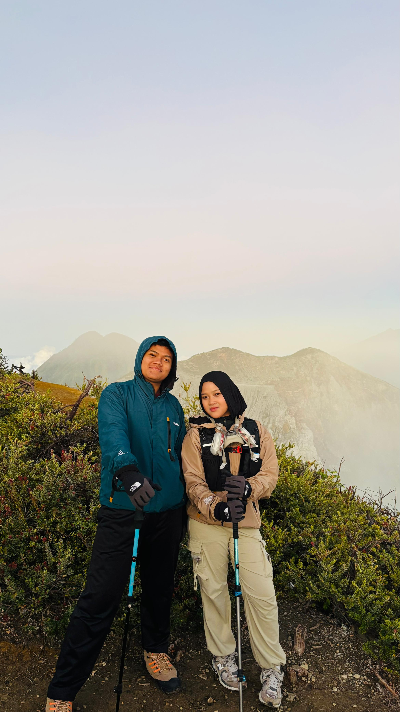
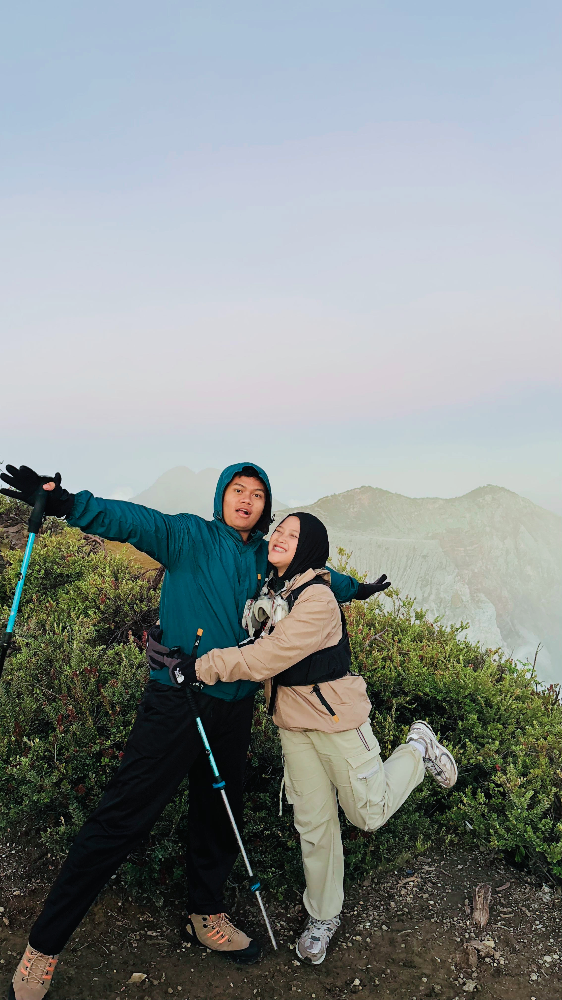

🎂 Happy Birthday 🎂

Rara Gemesh



Dear My best Friend,
Hari ini adalah hari yang sangat spesial karena dunia pernah menghadirkan seseorang sebaik dan sekuat dirimu.
Semoga Diberikan umur yang Berkah, semoga apa yang di cita citakan segera tercapai
"Pesenku" Kalau suatu saat kamu ngerasa lelah, capek atau hidupmu kerasa berat, jangan lupa kalo kamu adalah Ninis yang kuat. Kamu udah lewatin banyak hal sampai sejauh ini. ngga apa-apa kalo kamu ngerasain capek, tapi jangan coba coba niatin akhirin hidup lagi ya. Yang penting, jangan pernah ngeragu in dirimu sendiri dan semua usaha yang sudah kamu lakukan selama ini. Jangan lupa, ucapin terima kasih ke dirimu sendiri. karena kamu sudah bertahan, pantang menyerah, meskipun ada banyak hal yang mungkin kerasa berat buat dipikul sendirian.
Jujur aja, setelah kamu cerita banyak hal tentang hidupmu ke aku waktu di Taman kota itu, aku merasa kayanya kalo aku jadi kamu nggak bakalan kuat. aku ucapin selamat ulang tahun dan terimakasih udah jadi sahabat yang mau dengerin keluhanku, yang mungkin nggak sebanding sama beratnya hidupmu.